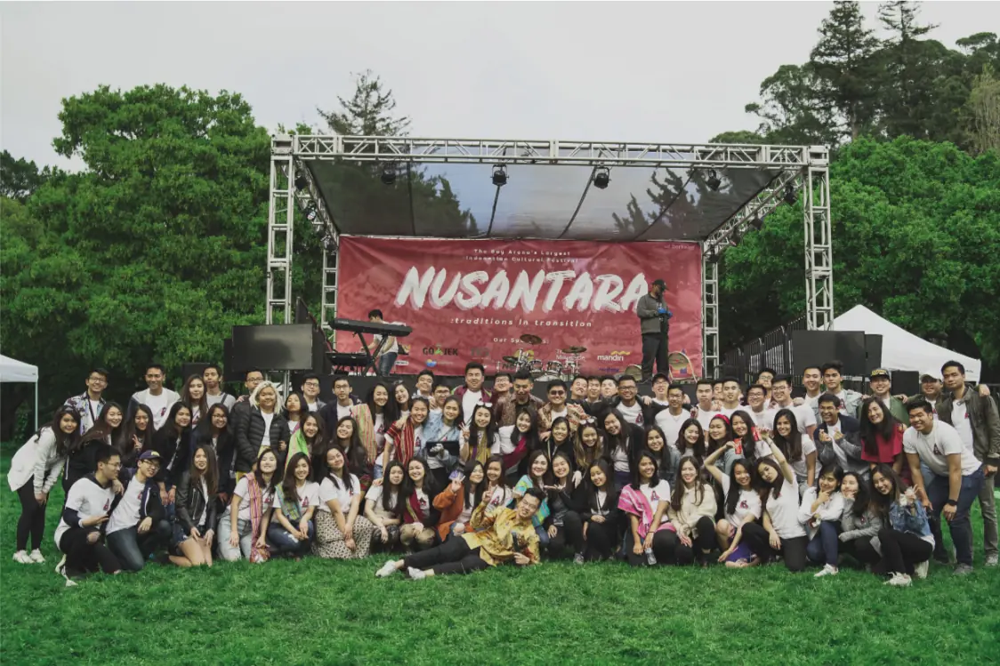
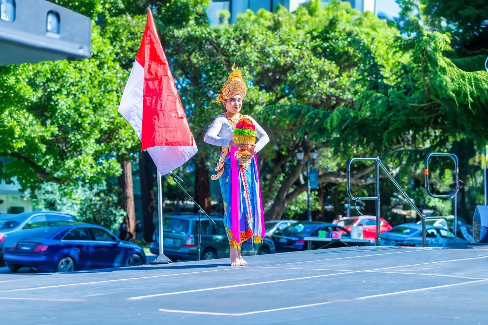
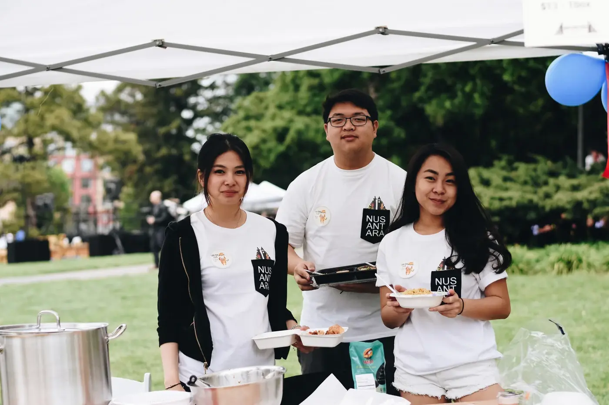
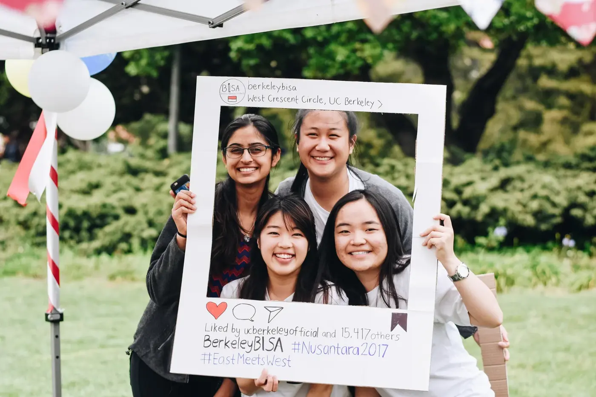
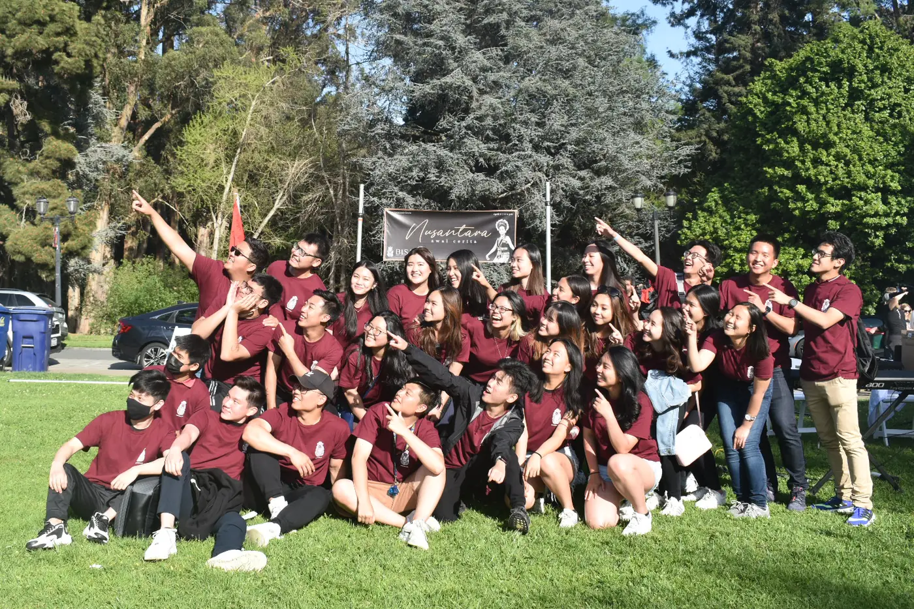

Acara utamaOur flagship event
A term originating from the Javanese island of Indonesia, Nusantara translates to “archipelago”, which describes our 18,307 islands.
Nusantara








- Largestannual Indonesian cultural event in the Bay Area
- 5,000+visitors come through every year
- Freefor all guests, including you
- All daytraditional food, performances, games, and more
Nusantara celebrates and promotes Indonesia’s rich and diverse culture to communities across the Bay Area, while giving Indonesians living away from home a place to reconnect to their roots.